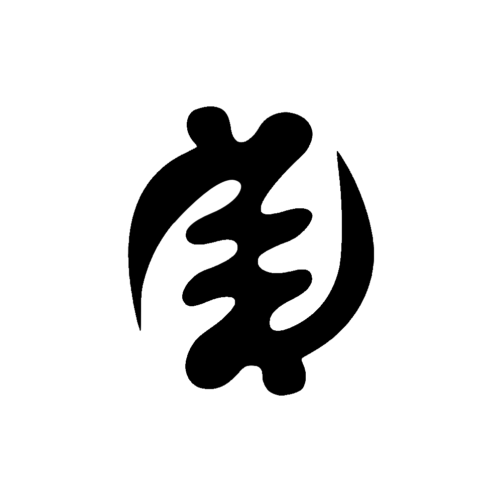

Historia
Colonizacion Europea
La historia escrita de Sudáfrica comienza con la llegada de los portugueses. En 1487 Bartolomé Díaz fue el primer europeo en alcanzar el punto más austral de África. El monarca Juan II de Portugal prometió establecer desde ese punto una ruta marítima para que los portugueses pudieran ir a buscar las riquezas de la India.
Colonizacion europea a partir del XVII
En 1652 se establecen los neerlandeses. Para aliviar la escasez de trabajadores en el Cabo, se trajeron esclavos de Indonesia, Madagascar e India. Incorporaron a los nativos como mano de obra agrícola o miembros de las milicias. La estructura política de los khoikhoi no era suficientemente fuerte como para resistir.
Los británicos en el Cabo: Gran Bretaña ocupó el área del cabo de Buena Esperanza en 1797 durante la guerra anglo-neerlandesa. Debido a la presión de las sociedades abolicionistas de Gran Bretaña, el parlamento británico primero paró su comercio de esclavos en 1806, para posteriormente abolir definitivamente la esclavitud en 1833. Los descubrimientos de diamantes en 1867 y el oro en 1886 animaron el crecimiento de la economía y la inmigración, lo que intensificó la subyugación de los nativos. Los bóeres se resistieron con fiereza, pero los británicos finalmente derrotaron a las fuerzas bóeres, usando su superioridad numérica.
Geografía
Apartheid
En 1948, el Partido Nacional llegó al poder. Abogando un sistema segregacionista y racista, éste inició el apartheid, palabra que en Afrikáans significa "separación". Se creó un vasto sistema jurídico y social para separar a las razas blanca y negra, con ventaja para la primera, a la que se le otorgaba privilegios políticos, económicos y sociales.En 1960 Sudáfrica se independizó del Reino Unido, Con el paso de los años, el apartheid provocó repudio, rechazo e indignación en el mundo entero. Numerosos países rompieron relaciones diplomáticas y comerciales con Sudáfrica, generando un creciente aislamiento del gobierno sudafricano.
1989 se produjo un golpe palaciego dentro del Partido Nacional. En él, el Presidente Pieter Botha fue desplazado por Frederik De Klerk, y éste inició el desmantelamiento del apartheid. Se levantó la proscripción que pesaba sobre el CNA y otras organizaciones políticas de izquierda, y se liberó a Nelson Mandela tras 27 años de prisión. En un referéndum de 1993, los blancos aceptaron otorgarle el derecho al voto a la mayoría negra, y al año siguiente, en 1994, se realizaron las primeras elecciones democráticas del país. Nelson Mandela fue electo presidente por mayoría absoluta en representación del CNA, partido que se ha mantenido en el poder desde entonces. El aislamiento internacional que pesaba sobre el país llegó a su fin.Mandela se convirtió en un símbolo de la lucha contra el apartheid dentro y fuera del país y una figura legendaria que representaba la falta de libertad de todos los habitantes negros de Sudáfrica.
Economía
Instauracion del nuevo regimen
La transición democrática se vio facilitada por un proceso único de la reconciliación y Ubuntu: la Comisión para la verdad y la reconciliación, presidida por el premio Nobel de la Paz, el arzobispo anglicano, Desmond Tutu, fue creado en 1995 y cerró su informe en 1998. A pesar del fin del apartheid, millones de sudafricanos negros continúan actualmente viviendo en la pobreza, en parte a causa de los problemas heredados del régimen del apartheid y debido también a que los gobiernos post-apartheid han tenido las manos atadas en los temas económicos, los cuales durante la transición fueron gestionados casi exclusivamente por los miembros del gobierno saliente. De esta forma los blancos pierden el control político pero se aseguran mantener sus privilegios económicos. Sin embargo, la política de vivienda llevada a cabo por el CNA ha producido alguna mejora en las condiciones de vida en muchas regiones, si bien la desigualdad entre las distintas clases sociales es todavía muy grande, comparada con los estándares de otros países.
la economía está más diversificada, la exportación de oro y diamantes sigue siendo la fuente de ingresos más importante del país. Actualmente el gobierno de Sudáfrica está también empeñado en realizar una vasta reforma agraria para aliviar la tensión social y las desigualdades raciales. Esta reforma consiste en la devolución de tierras por parte de los blancos a los negros, a los cuales se las arrebataron en la época colonial (cerca de un 80% de las tierras cultivables aún están en manos de los blancos). La reforma avanza con lentitud: menos del 10% de las tierras han sido devueltas, por lo que el Gobierno del país ha decidido obligar a los blancos a vender las tierras por un precio razonable o expropiarlas en un corto período. Pero existe en algunos sectores de la sociedad, también, un gran temor a que la impaciencia de la población negra por tener tierras lleve a una reforma desordenada y caótica, lo que podría repetir la desastrosa reforma agraria realizada en la vecina Zimbabue, que arruinó la agricultura y causó una terrible hambruna en ese país.
Zuma, actual líder del CNA, un político que fue acusado de corrupción y violación (cargos que fueron retirados), es presidente de Sudáfrica desde el 9 de mayo de 2009, cuando fue elegido por la Asamblea Nacional después de que su partido obtuviese el 70% de los votos en las elecciones.